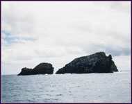

|
|
|
|
|
ABOUT THIS SITE
|
California
Explores the Ocean represents a collaborative endeavor to make
primary source collections available from the Scripps Institution of
Oceanography Archives, Scripps Institution of Oceanography Library, and
San Diego Historical Society. Covering several California ocean-related
collections, textual, pictorial, and audio resources have been united as
a virtual collection to which materials can be added in the future by
the initial participants, and, through metadata, by others with
significant resources relevant to California oceans and oceanography.
With funding from the Library Services and
Technology Act (LSTA), the goal of this project is to improve access
by the public and scientists alike, to selected information relating to
California oceans and oceanography.
|
|
|
 |
|
|
|
|
|
|
|
|
|
| Details |
LSTA Grant
The Library Services and Technology Act (LSTA) is a federal
grant program administered in California by the State Librarian. Each
year the State Librarian awards grants on a competitive basis within the
two broad goals of technological improvements and services to people of
diverse cultures and situations. |
Digitizing the Source
Materials
|
Metadata Creation
|
Credits
|
Contact
E-mail the Digital Library Program. |
© Copyright UCSD, All Rights Reserved. This site may not be reproduced.
UCSD Libraries, 9500 Gilman Drive #0175, La Jolla, CA 92093, 858-534-3336
|